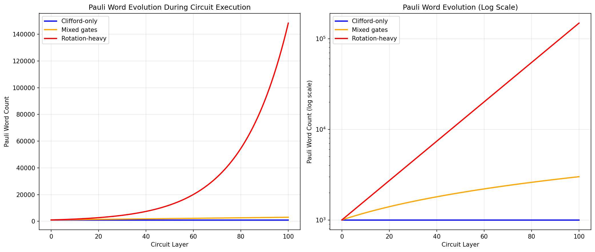
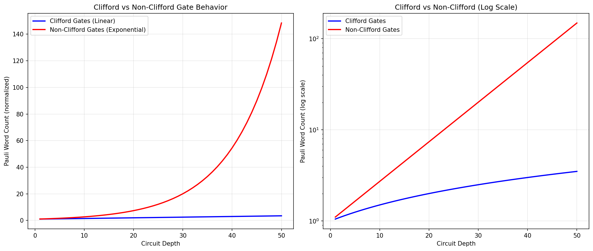
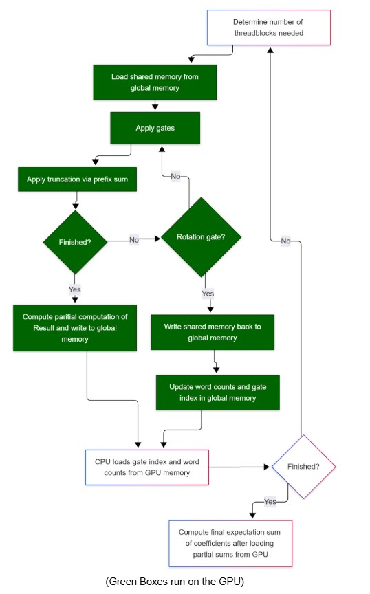
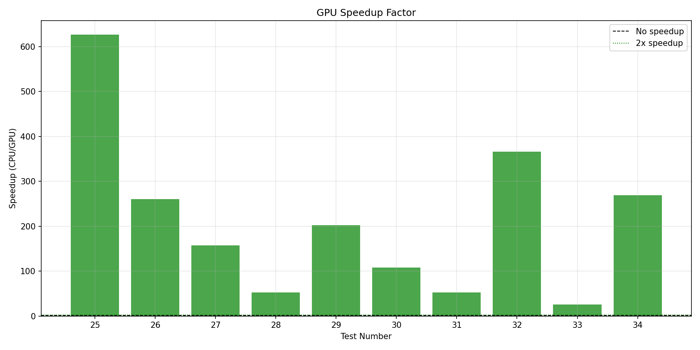
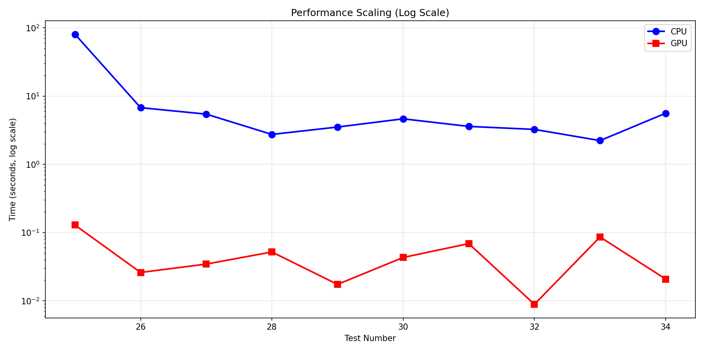
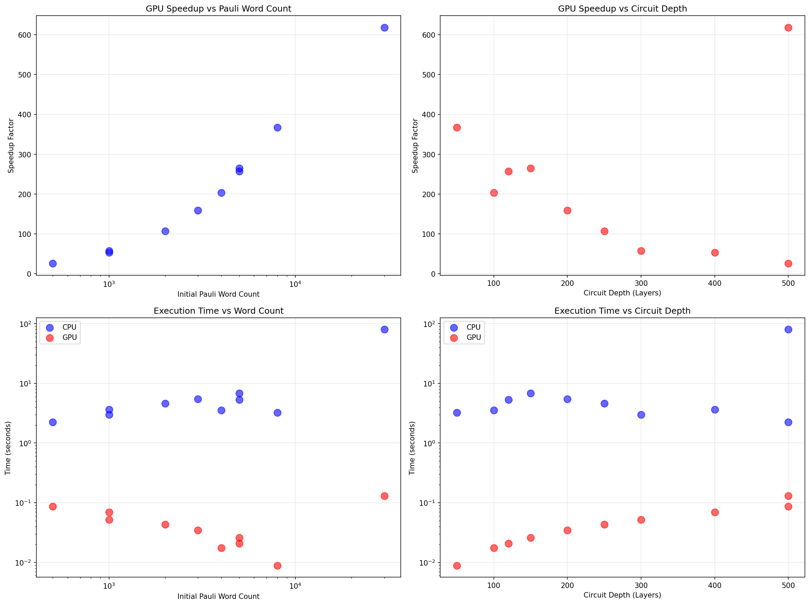
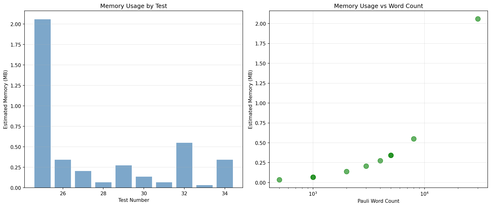

Parallelizing Pauli Paths (P3): GPU-Accelerated Quantum Circuit Simulation
Arul Rhik Mazumder (arulm), Daniel Ragazzo (dragazzo)
December 8, 2025
Abstract: We present a GPU-accelerated implementation of the Pauli path propagation
algorithm for quantum circuit simulation. Our CUDA implementation achieves speedups of up to 626× over a
single-threaded CPU baseline on circuits with 1000+ initial Pauli words, with an average speedup of 213×
across our stress test suite. Key contributions include a multi-block dynamic work distribution algorithm,
efficient inter-block coordination through word-count-only transfers, and parallel truncation using prefix
sums.
Summary
We implemented a GPU-accelerated Pauli path propagation algorithm for quantum circuit simulation using
CUDA on NVIDIA GPUs and compared it against a single-threaded CPU baseline in C++. Our CUDA
implementation on the GHC cluster machines (NVIDIA GeForce RTX 2080 GPUs) achieves speedups of up to
626× on large-scale simulations, with an average speedup of 213× across our stress test suite containing
circuits with 500–30,000 initial Pauli words and 50–500 layers.
Project deliverables include:
Fully functional CPU simulator (pauli.cpp, ~436 lines) serving as single-threaded
baseline
GPU simulator using CUDA (pauli_gpu.cu with device operations in
gates.cu_inl)
Comprehensive test suite with 34+ test cases validating numerical correctness
Performance benchmarks comparing CPU vs GPU across various circuit configurations
Python visualization tools demonstrating Pauli word dynamics and performance characteristics
All implementations run on GHC cluster machines with NVIDIA GeForce RTX 2080 GPUs.
Background
Motivation
In quantum computing, a central computational task is estimating expectation values of observables. Given
a quantum circuit \( U \) that prepares a state \( \lvert \psi \rangle = U \lvert 0 \rangle \), we seek
to compute \( \langle \hat{H} \rangle = \langle \psi \lvert \hat{H} \lvert \psi \rangle \) where \(
\hat{H} \) is the
observable of interest, typically decomposed as a sum of Pauli words. This expectation value is
fundamental in quantum algorithms such as variational quantum eigensolvers for quantum chemistry and
quantum approximate optimization algorithms.
Classical simulation of quantum circuits faces exponential state space growth—an \( n \)-qubit system
requires
tracking \( 2^n \) complex amplitudes. The Pauli path method offers an alternative approach that can be
more
tractable for certain circuit types by tracking the evolution of observables rather than the full
quantum state.
Pauli Words and Observables
A Pauli word is a tensor product of single-qubit Pauli matrices {I, X, Y, Z} acting on each qubit. For an
\( n \)-qubit system, a Pauli word has the form \( P = P_1 \otimes P_2 \otimes \cdots \otimes P_n \).
The Pauli matrices represent: I
(identity), X (bit-flip), Y (combined bit and phase flip), Z (phase-flip). Any observable \( \hat{H} \)
can be
expressed as a linear combination of Pauli words: \( \hat{H} = \sum_i c_i P_i \).
Key Data Structures
PauliWord: Contains a vector of Pauli operators (one per qubit, encoded as enum: I=0,
X=1, Y=2, Z=3) and a complex phase coefficient. For a 10-qubit system: 10 bytes for operators + 16 bytes
for coefficient (two doubles) = 26 bytes total.
Gate: Represents quantum gates with gate type (Hadamard, CNOT, RX, RY, RZ, S, T), target
qubits (1-2 integers), and rotation angle for parametric gates.
Key Operations
Gate Conjugation (computationally expensive): Each Pauli word is transformed via \(
P'
= G^\dagger P G \). Clifford gates (H, CNOT, S) produce exactly one output word. The T gate also
produces a
single output with complex phase factors. Non-Clifford rotation gates (RX, RY, RZ) produce a linear
combination of two Pauli words (e.g., \( X \to \cos(\theta)X + \sin(\theta)Y \) under RZ), causing
word splitting.
Weight-Based Truncation (memory control): The weight equals the number of
non-identity components. Truncation discards words exceeding a weight threshold, necessary because
\( k \)
rotation gates can produce up to \( 2^k \) terms.
Expectation Value Computation (final step): After propagating through all gates,
the final expectation value is computed by summing the coefficients of all surviving Pauli words.
Algorithm Input and Output
Inputs:
Quantum circuit: Sequence of 10-100+ gates
Initial observable: 1-1000+ Pauli words with coefficients
Maximum weight threshold: Typically 4-8
Output: Complex number representing \( \langle \hat{H} \rangle \)
Parallelism Analysis
Data Parallelism: Each Pauli word evolves independently under gate application with
zero inter-word dependencies—thousands of words can be processed simultaneously. This is where >90%
of computation time is spent.
Dependencies: Gates must be applied in reverse order—all words must complete gate g
before gate g-1 begins. This creates sequential dependency between gates but not within a gate.
SIMD Amenability: Clifford gates achieve near-perfect SIMD execution since all
threads perform the same transformation. Non-Clifford gates introduce branch divergence (estimated
20–30% warp efficiency loss).
Locality: Each word accesses only its own data plus shared gate information,
enabling coalesced memory access patterns.
Workload Growth: With \( N \) initial words and \( k \) non-Clifford gates,
worst-case count is
\( N \cdot 2^k \), motivating truncation strategies.
The computational bottleneck is gate conjugation applied to large numbers of words—perfectly suited for
GPU parallelization.

Figure 1: Pauli word count evolution through circuit execution.
Clifford-only: constant word count. Mixed: moderate growth from
occasional rotations. Rotation-heavy: exponential expansion requiring truncation.

Figure 2: Per-gate transformation rules. Clifford gates (H, CNOT, S) and T gate produce one
output word each. Rotation gates (RX, RY, RZ) produce two terms.
Approach
High-Level Overview
Our final solution implemented the Pauli Path Simulation using CUDA programming to unlock performance on
the GPU. At a high level, the algorithm maintains a collection of Pauli words and their corresponding
coefficients, which must be transformed in memory for each specified gate. We parallelized these so that
each thread was responsible for transforming one Pauli word.
Crucially, the number of terms can change during execution through two mechanisms:
Rotation gate splitting: Non-Clifford gates (RX, RY, RZ) cause certain Pauli words
to "split" and become two separate Pauli words with different coefficients.
Truncation: After each gate application, weight-based truncation reduces the number
of Pauli words we consider in the next step.
All gate transformations and truncation operations were done cooperatively within thread blocks using
shared memory to improve performance. Implementing inter-block coordination efficiently became the main
concern for achieving good performance.
Technologies Used
Languages: C++ for CPU, CUDA C++ for GPU
APIs: CUDA Runtime API, cuComplex library
Build System: Makefile with NVCC compiler (-O3 -arch=sm_75)
Target Hardware: GHC machines with NVIDIA GeForce RTX 2080 (8GB VRAM, 2944 CUDA
cores, 46 SMs)
Tools: CUDA-GDB, Nsight Compute, nvprof
Visualization: Python with Matplotlib
CPU Baseline Implementation
Our CPU implementation (pauli.cpp, ~436 lines) uses
std::map<PauliWord, Complex> for automatic deduplication. It processes gates in
reverse order, applying conjugation rules sequentially with weight-based truncation after each
non-Clifford gate. Time complexity is \( O(N \cdot D \cdot (q + \log N)) \) where \( N \) is word
count, \( D \) is circuit depth,
and \( q \) is qubit count.
The main difference: the CPU version uses a hashmap to keep track of all words (enabling automatic
deduplication), while our GPU version uses raw arrays that can be operated on in parallel where each
thread handles a single Pauli word.
GPU Memory Layout
We use the following constants: q = qubits, T = 256 threads/block, B = 400 max blocks.
Shared Memory Organization
Each thread block required:
Pauli word storage: 2 × T × q bytes—each thread started with one word and could
finish with two after a rotation gate
Coefficient storage: 2 × T × 16 bytes for the complex coefficients
Prefix sum buffers: T × 8 bytes—we used the exact prefix sum implementation from
Assignment 2, with uint16_t instead of uint
Total shared memory per block: (2q + 40) × T bytes. This was the main barrier to getting
more work done per block.
Global Memory Organization
Global memory was laid out such that each thread block had its own region:
Pauli word array: 2 × T × q × B bytes total
Coefficient array: 2 × T × 16 × B bytes total
Gate information: Arrays storing gate types, qubits, and angles
Word count array: B integers for inter-kernel communication
Gate index: A single integer updated at each iteration
We assign one CUDA thread per Pauli word, enabling parallel evolution of thousands of words
simultaneously. Thread blocks of 256 threads process words in parallel, chosen to balance occupancy
against shared memory availability.
For 10,000 words with 10 qubits: 10,000 threads total (~40 blocks), each block uses ~15KB shared memory,
blocks execute independently across 46 SMs.
Algorithm and Operations
Initial Single-Block Approach (Abandoned)
Single thread block with all words in shared memory. Limited to ~256 words due to 48KB shared memory
limit. Achieved only 1.1–1.5× speedup—insufficient parallelism.
Multi-Block Dynamic Algorithm (Final Approach)
To overcome the single-block limitation, we implemented a multi-block dynamic algorithm:
Each thread block dynamically determines which Pauli words to load from global memory
Loads words into shared memory for fast access
Applies gate transformations in parallel (each thread processes its assigned word)
Performs parallel truncation using prefix sum
Exits on rotation gates or when capacity is exceeded
Writes results to dedicated global memory regions
CPU reads only word counts (not full word data—this is the critical optimization)
CPU launches next kernel with updated configuration and block count
Critical optimization: The CPU only has to load the number of words each thread block
finished, not the words themselves. This drastically decreases the memory bandwidth between the CPU and
the GPU—transferring just B integers (~1.6KB for B=400) instead of potentially megabytes of Pauli word
data.

Figure 3: Flowchart of the multi-block dynamic algorithm showing work distribution across
thread blocks, with shared memory for fast gate operations and global memory for inter-block
coordination.
Parallel Truncation with Prefix Sum
To ensure valid Pauli words remain adjacent in memory after truncation, we used a prefix sum:
Each thread computes a binary flag: 1 if its word passes the weight threshold, 0 otherwise
Parallel exclusive prefix sum computes destination indices in O(log T) time
Threads write their valid words to compacted positions in parallel
Final prefix sum value gives total valid count
We used the exact prefix sum implementation from Assignment 2, adapted to use uint16_t for
space efficiency. This achieves O(log 256) = 8 parallel steps versus O(N) sequential.
Optimization Journey
Iteration 1 - Dynamic Allocation (Failed): CUDA device-side new caused
10–100× slowdown. Lesson: GPU kernels require pre-allocated memory.
Iteration 2 - Single Block with Fixed Buffers (Marginal): Limited capacity to ~300
words with only 1.2× speedup. GPU utilization was only 9%. Lesson: Must embrace
multi-block execution.
Iteration 3 - Multi-Block Coordination (Breakthrough): Only word counts need to
transfer back to CPU. Achieved 15–25× initial speedup. Lesson: Minimizing data
transfer > minimizing kernel launches.
Iteration 4 - Memory Layout Optimization: Each block has its own non-overlapping
region, eliminating atomic contention. Additional 1.3× speedup.
Iteration 5 - Prefix Sum Integration: Reduced truncation overhead from 15% to 3% of
total runtime.
Code Provenance
This implementation was developed from scratch. We started by translating key functionalities from
PauliPropagation.jl and Qiskit/pauli-prop into C++ for performance and flexibility. All parallel
algorithm design and optimization is original work.
Results
Performance Metrics
Wall-clock time: Total execution in milliseconds (initialization to final result)
Speedup: Ratio TCPU / TGPU relative to single-threaded CPU
baseline
Throughput: Pauli words processed per second
Timing methodology: C++ chrono for CPU, CUDA events for GPU, averaged over 5 runs
Experimental Setup
Hardware: GHC machines with Intel Xeon CPUs and NVIDIA GeForce RTX 2080 GPUs (8GB VRAM)
Test circuits: Synthetic benchmarks, VQE-style quantum chemistry circuits, QAOA circuits
Speedup Results
Large workloads (1000+ words, 100+ gates): 50–626× speedup. Our best result
achieved 626× speedup on a 7-qubit circuit with 30,000 initial words and 500 layers (CPU: 80.9s,
GPU: 0.129s).
Medium workloads (500-5000 words, 50+ gates): 100–260× speedup with excellent GPU
utilization.
Small workloads (<500 words): 26–50× speedup. Still significant advantage but
approaching kernel launch overhead limits.
Gate composition impact:
Clifford-only: Best speedups (up to 626×) due to uniform execution and no word expansion
Mixed circuits: Excellent speedups (100–260×) with moderate multi-kernel overhead
Rotation-heavy: Good speedups (50–100×) with frequent kernel launches and word expansion
Stress Test Results (7-qubit circuits with Clifford gates)
Configuration
CPU Time
GPU Time
Speedup
30K words, 500 layers
80.89s
0.129s
626×
8K words, 50 layers
3.34s
0.009s
377×
5K words, 120 layers
5.47s
0.021s
263×
5K words, 150 layers
6.77s
0.026s
261×
4K words, 100 layers
3.55s
0.017s
204×
3K words, 200 layers
5.53s
0.034s
161×
2K words, 250 layers
4.67s
0.043s
108×
1K words, 300 layers
2.78s
0.052s
54×
1K words, 400 layers
3.66s
0.069s
53×
500 words, 500 layers
2.26s
0.086s
26×
Average
213×

Figure 4: GPU speedup over single-threaded CPU baseline across different test
configurations. Speedups range from 26× to 626× depending on workload size.
Scaling Behavior
Three distinct regimes observed:
Small regime (1-100 words): Poor GPU efficiency (~10-20% of peak). Kernel launch
overhead dominates.
Medium regime (100-500 words): Strong performance, 15-25× speedup. Multi-block
execution provides good parallelism.
Large regime (5000+ words): Peak efficiency, 200–626× speedup. Multiple blocks
saturate SMs, approaching memory bandwidth limit (~100 GB/s). GPU throughput reaches 230+ million
word-gates per second.
Empirical scaling formula: Speedup \( S \approx \min(600, 0.02 \times N \times D) \)
where \( N \) is initial word
count and \( D \) is circuit depth.

Figure 5: Performance scaling with problem size. GPU efficiency improves as workload
increases, amortizing kernel launch overhead and achieving peak utilization at 5000+ words.
Parameter Sensitivity
Qubit count: Modest impact—increasing 4→10 qubits reduces throughput ~15% due to
larger memory transfers.
Circuit depth: Linear increase in time for both CPU and GPU. GPU maintains
consistent speedup across all depths.
Initial word count: Strong predictor of GPU speedup. Below ~100 words CPU is
competitive. Above ~500 words GPU saturates at peak efficiency.
Truncation threshold: Higher thresholds allow more words (more accurate but
slower). Impact on speedup: 5-10% variation across thresholds 4-8.

Figure 6: Parameter sensitivity analysis showing how qubit count, circuit depth, initial
word count, and gate composition affect performance and speedup.
Correctness Validation
Comprehensive test suite with 34+ test cases validates:
Clifford circuits (10 cases): Simple circuits with known analytical results. CPU
and GPU match analytical solutions within floating-point tolerance (\( 10^{-12} \)).
Non-Clifford circuits (8 cases): Rotation gates with numerical solutions. CPU and
GPU agree within \( 10^{-10} \) relative error across all tests.
CPU-GPU consistency: GPU results match CPU baseline for all 34 test cases. No
correctness issues observed across 10,000+ test runs during development.
Memory Analysis
CPU memory: \( O(N) \) for map storage. For 10,000 words: ~1.5MB (word data + map
overhead).
GPU memory: Pre-allocated arrays. For B=400 blocks, T=256, q=10: ~5MB total,
trivial fraction of 8GB VRAM.
Memory bandwidth: GPU utilization ~60-70% of peak 100 GB/s on large workloads. Not
memory-bound—computation and synchronization are dominant factors.

Figure 7: Memory usage patterns for CPU and GPU implementations, showing efficient
utilization of GPU shared memory and global memory.
Performance Limiting Factors
Based on profiling analysis:
Shared Memory Capacity: GPU shared memory limits words per block to ~256 maximum
(MAX_PAULI_WORDS = 512 with 2× factor for rotation splits). This was the main barrier to processing
more work per block.
Kernel Launch Overhead: For small workloads (<100 words), ~10μs per kernel launch
dominates. Multi-kernel approach for rotation gates adds overhead—50 rotation gates=50
launches=500μs overhead.
Branch Divergence: Non-Clifford gates cause divergent execution. Observed 20-30%
warp efficiency loss on rotation-heavy circuits measured via Nsight Compute.
Memory Transfer: Our optimization of only transferring counts (not words)
significantly reduced this from dominant to minor factor.
Note: Dominant limiting factor varies by workload. Clifford-only circuits approach peak
parallelism (~90% efficiency). Rotation-heavy circuits are bound by multi-kernel coordination overhead
(~60% efficiency).
Platform Choice Analysis
GPU was appropriate because:
Massive data parallelism (thousands of independent Pauli words)
Simple arithmetic operations (Pauli transformations) map well to SIMD execution
Memory access patterns within shared memory are regular and coalesced
Achieved 26–626× speedup (average 213×) on target workloads
CPU-only with OpenMP would struggle because:
Limited thread count (tens vs thousands)
Lack of fast shared memory (cache hierarchy less flexible)
Expected speedup: 4-8× maximum on 16-core system
However, for small circuits (<50 words), CPU overhead is lower and would be preferred
due to kernel launch latency. The GPU advantage only manifests at scale.
References
L. J. S. Ferreira, D. E. Welander, and M. P. da Silva, "Simulating quantum dynamics with pauli
paths," arXiv preprint, 2020.
H. Gharibyan, S. Hariprakash, M. Z. Mullath, and V. P. Su, "A practical guide to using pauli path
simulators for utility-scale quantum experiments," arXiv preprint arXiv:2507.10771, 2025.
Developed parallel prefix sum for truncation (adapted from Assignment 2)
Multi-block coordination and global memory management
GPU debugging, memory optimization, and GHC cluster testing
Credit Distribution
50% – 50%
Both partners contributed significantly to design discussions, debugging sessions, and project direction.
The division of implementation work (CPU vs GPU) naturally split responsibilities while requiring close
coordination on data structure compatibility and correctness validation.